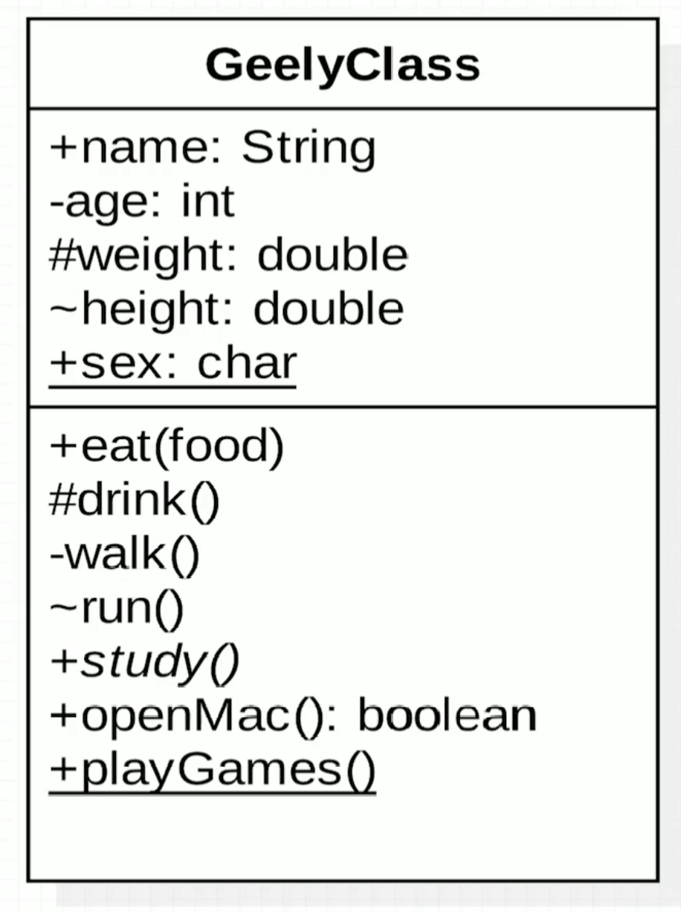
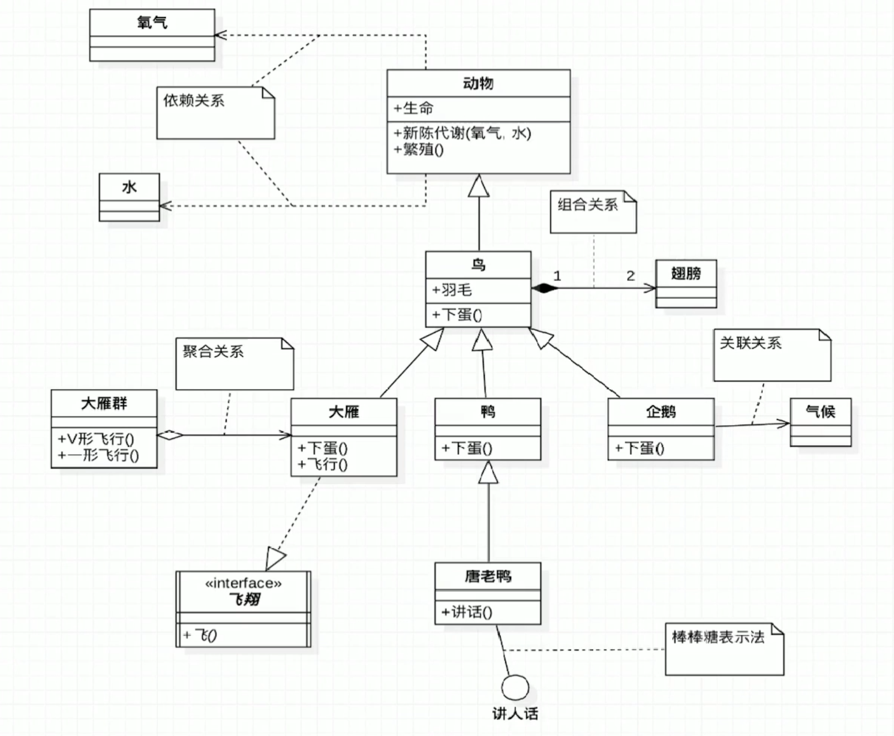
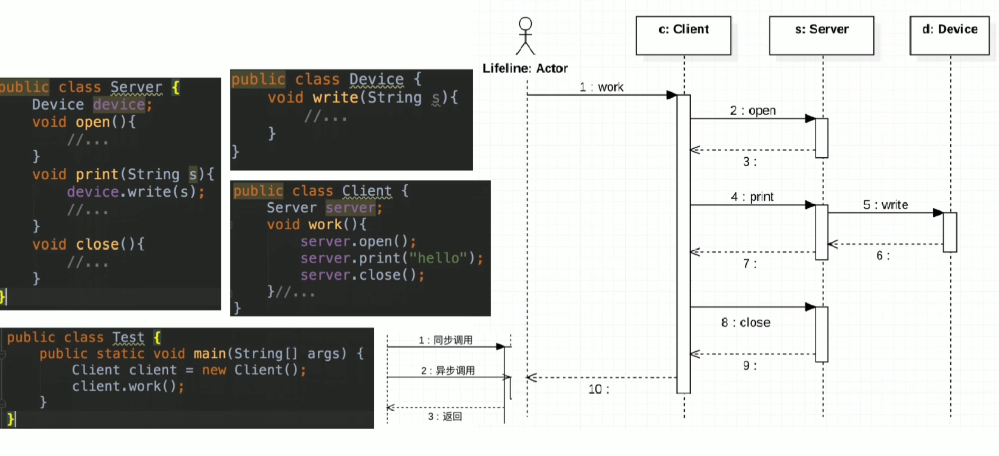
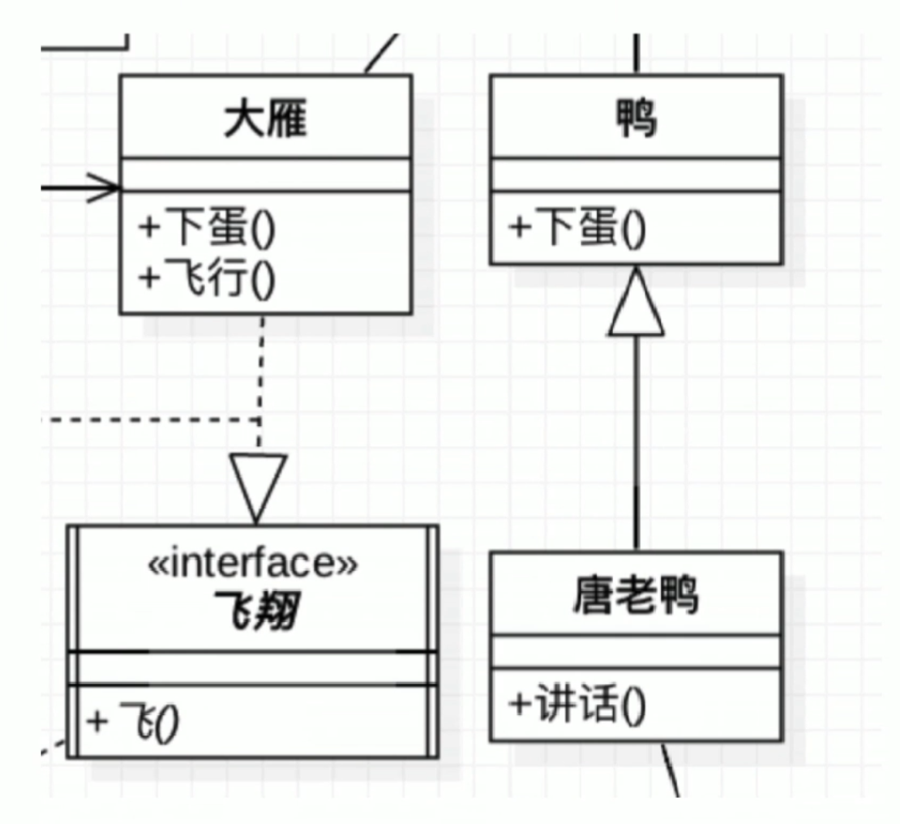
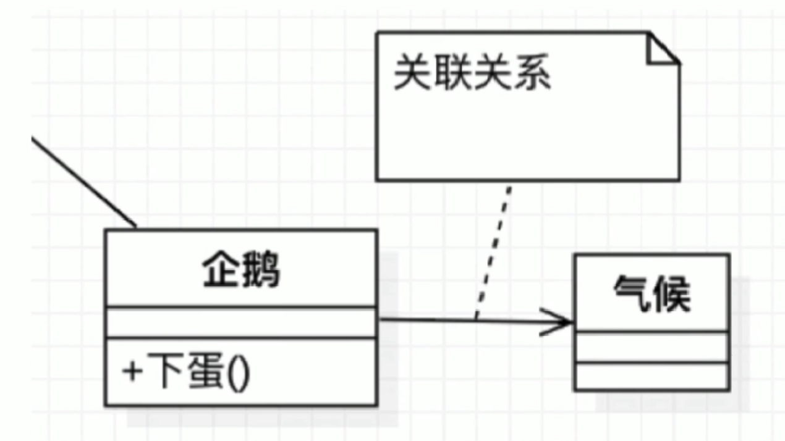
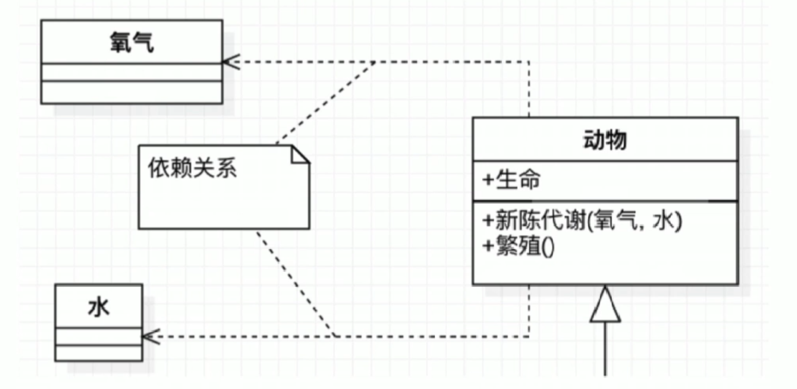
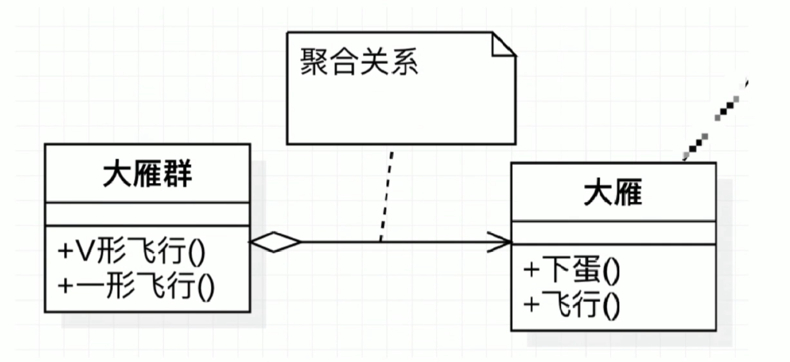
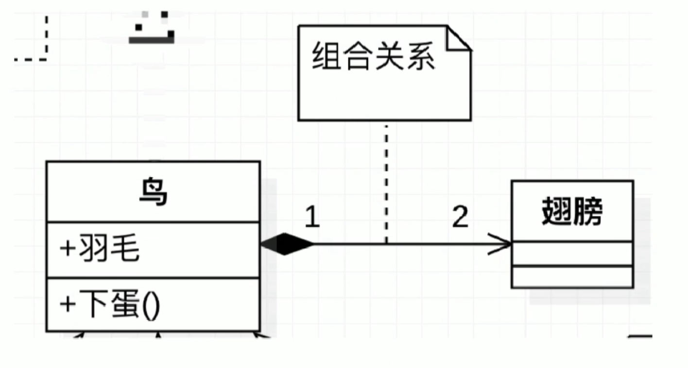

UML
定义
统一建模语言（Unified Modeling Language，UML）
非专利的第三代建模和规约语言
特点
UML是一种开发的方法
用于说明、可视化、构建和编写一个正在开发的面向对象的、软件密集系统的制品的开放方法
UML展现了一系列最佳工程实践，这些最佳实践是对大规模，复杂系统进行建模方法，特别是在软件架构层次已经被验证有效；
分类
UML2.2 中一共定义了14种图示，分类如下：
结构式图形：
强调的是系统式的建模；
- 静态图（类图，对象图，包图）
- 实现图（组件图，部署图）
- 剖面图
- 复合结构图
行为式图形：
强调系统模型中触发的事件；
- 活动图
- 状态图
- 用例图
交互式图形：
属于行为式图形子集合，强调系统模型中资料流程
- 通信图
- 交互概述图（uml2.0）
- 时序图（uml2.0）
- 时间图（uml2.0）
UML类图
- Class Diagram： 用于表示类、接口、实例等之间相互的静态关系
- 虽然名字叫类图，但类图中并不只有类，还有权限 属性 方法等等；

GeelyClass: 类名，如果是斜体则表示抽象类， 接口则加上前缀
+: public ，最大的权限
-： private ，最小的权限
#： protected
~：default ， 包权限
+sex：char ：下划线表示 static
多个类之间的关系
下图选自《大话设计模式》

时序图
- Sequence Diagram： 是现实对象之间交互的图，这些对象是按时间顺序排列的；
- 时序图中包括的建模元素主要有：对象（Actor），生命线（Lifeline），控制焦点（Focus of control），消息（Message）等

每个类 下面的 竖向矩形表示该类的 activity（生命周期）；
UML的类图，时序图，用例图在日常工作中非常重要，通过时序图可以了解程序整体的调用关系以及和时间的对应关系；
记忆技巧
- UML箭头方向：从子类指向父类
提示： 可能会认为子类是以父类为基础的，箭头应从父类指向子类；（错误的）
首先定义子类时需要通过extends关键字指定父类；
子类是一定知道父类定义的，但父类并不知道子类的定义；
只有知道对方信息时才能指向对方；所以箭头的方向是从子类指向父类；
- 实线-继承|虚线-实线

大雁 class实现了一个叫做 飞翔的interface，
唐老鸭class 继承了 鸭class
空心三角箭头：继承或实现
实现|继承： is a 关系，扩展目的，不虚，很结实；
虚线|实现 ，虚线代表“虚”无实体；
- 实线-关联|虚线-依赖

企鹅和气候的关系；

动物依赖氧气和水
虚线-依赖关系：临时用一下，若即脱离，虚无缥缈，若有若无；
表示一种使用关系，一个类需要借助另一个类来实现功能；
一般是一个类使用另一个类做为参数使用，或作为返回值；
实线-关联关系：关系稳定，实打实的关系，铁哥们
表示一个类对象和另一个类对象有关联
通常是一个类中有另一个类对象作为属性
- 菱形就是一个盛东西的器皿（例如盘子）
- 聚合：（空心菱形）代表空器皿里可以放很多相同东西，聚在一起（箭头方向所指的类）
- 组合：（实心菱形）代表满器皿里已经有实体结构的存在，生死与共；

大雁聚合在一起，形成大雁群

鸟和翅膀，强关系。并且拥有相同的生命周期；
空心菱形-聚合，整体和局部的关系，两者有着独立的生命周期，是has a的关系；
弱关系
消极的词： 弱-空
实心菱形-组合，整体和局部的关系，和聚合的关系相比，关系更加强烈，两者有相同的生命周期，contains-a的关系；
强关系
积极的词：强-满
- 常见数字表达及含义，假设有A类和B类，数字标在A类侧
1 | 0..1 0或1个实例 |
设计原则
开闭原则
依赖倒置原则
单一职责原则
接口隔离原则
迪米特原则
里氏替换原则
合成复用原则
设计模式
创建型模式
工厂模式
抽象工厂模式
建造者模式
单例模式
原型模式
结构型模式
适配器模式
装饰者模式
代理模式
外观模式
桥接模式
组合模式
享元模式
行为型模式
策略模式
观察者模式
责任链模式
备忘录模式
模板模式
迭代器模式
中介者模式
命令模式
访问者模式
解释器模式
状态模式